Orange Digital Center
Memoire de fin de cycle - Specialite Developpeur Full Stack Web et Mobile
KYA (Keur Ya Aicha)
Sujet
Conception et realisation d'une plateforme de gestion locative multi-roles pour la gestion des clients, locations, paiements, depots, documents et notifications
Presente par
Papa Malick Teuw
+221 77 171 90 13
malickteuw.devweb@gmail.com
Nature du projet
Projet personnel de fin d'etudes
Duree: 21 jours
Thies, Senegal
Encadre par
M. Birane Bailla Wone
Coach developpeur / Encadrant academique
Annee academique 2025-2026
Dossier de soutenance complet incluant analyse, UML, architecture, implementation, deploiement et annexes code.
Fiche signaletique du projet
Champ
Valeur
Titre du projet
Conception et realisation d'une plateforme de gestion locative multi-roles pour la gestion des clients, locations, paiements, depots, documents et notifications
Nom de la solution
KYA (Keur Ya Aicha)
Auteur
Papa Malick Teuw
Telephone
+221 77 171 90 13
Email
malickteuw.devweb@gmail.com
Etablissement
Orange Digital Center
Specialite
Developpeur Full Stack Web et Mobile
Nature
Projet personnel de fin d'etudes
Encadrant academique
M. Birane Bailla Wone - Coach developpeur / Encadrant academique
Ce projet vise a fournir une solution complete de gestion locative multi-roles permettant au Super Admin, a l administrateur et aux utilisateurs du service de collaborer autour d un noyau unique: clients, locations, paiements, depots, documents, imports et notifications.
Dedicace
Je dedie ce travail a ma famille, a toutes les personnes qui m ont soutenu pendant mon parcours, ainsi qu a tous ceux qui croient qu une solution numerique bien pensee peut simplifier la gestion du quotidien.
Remerciements
J adresse mes sincères remerciements a l Orange Digital Center pour le cadre d apprentissage, a mon encadrant academique M. Birane Bailla Wone pour ses orientations, ainsi qu a toutes les personnes qui ont contribue de pres ou de loin a la realisation de ce projet.
Resume
Le projet KYA (Keur Ya Aicha) est une plateforme de gestion locative multi-roles realisee pour digitaliser les processus de gestion des clients, locations, paiements, depots, documents et imports de donnees. Il repond au besoin d une administration centralisee, traçable et moderne, capable de fonctionner aussi bien sur le web que sur une application desktop Electron.
La solution distingue clairement les responsabilites du Super Admin, qui pilote la gouvernance, l approbation des comptes et la supervision, et celles de l administrateur, qui gere ses propres clients, ses locations, ses paiements et ses documents. Une attention particuliere a ete accordee a la securite, a l audit, aux permissions fines, a la maintenance de plateforme, au blocage automatique des IP suspectes et a la seconde authentification du Super Admin.
L architecture retenue repose sur un frontend React/Vite/TypeScript avec Zustand et composants reutilisables, ainsi qu un backend Next.js structure selon les principes POO et SOLID, avec Prisma et PostgreSQL. Le projet inclut en plus un module d import Excel/CSV/JSON avec mapping, previsualisation editable, journalisation des erreurs et pages de retour, un module d abonnement administrateur avec controle des regles metier, et un service de notification transactionnelle Brevo base sur des evenements et des ecouteurs.
Le present dossier rassemble l ensemble des livrables necessaires a une soutenance complete: contexte, problematique, objectifs, UML, architecture, implementation detaillee, extraits de code exacts, liens de deploiement, documentation technique et annexes.
Abstract
KYA (Keur Ya Aicha) is a multi-role rental management platform designed to digitalize the administration of clients, rentals, monthly payments, deposits, documents, imports and transactional notifications. The project targets a practical, auditable and modern workflow for administrators and Super Admin users.
The solution combines a React/Vite/TypeScript frontend with a layered Next.js backend built around object-oriented and SOLID principles. Core features include role-based access, admin approval, configurable governance, platform maintenance, import runs with editable preview and validation, subscription payments, PDF receipts, audit logs and Brevo email notifications driven by events and listeners.
Le secteur locatif s appuie encore tres souvent sur des fichiers Excel disperses, des echanges WhatsApp non historises et des documents stockes sans gouvernance commune.
Cette organisation produit des doublons, des oublis de paiement, des difficultes de suivi et une faible traçabilite.
Dans ce contexte, le projet KYA a ete concu comme une reponse concrete a un besoin de centralisation. La plateforme devait permettre a un Super Admin de gouverner l ensemble du service, de controler l acces des administrateurs, de piloter les politiques de maintenance et de suivre les journaux d audit. Elle devait aussi permettre a chaque administrateur de gerer uniquement son portefeuille de clients, ses locations, ses paiements, ses documents et ses imports.
L objectif du projet ne se limitait pas a produire des ecrans. Il s agissait surtout de mettre en place une architecture fiable, securisee et evolutive, capable de supporter une version web, une version desktop Electron, une API backend industrialisable, un modele de donnees relationnel cohérent, et des integrations externes comme Cloudinary pour les fichiers et Brevo pour les notifications.
Ce document retrace donc a la fois la vision fonctionnelle et la realite technique du projet. Il presente le contexte, les choix d architecture, les diagrammes UML, la mise en oeuvre des principales fonctionnalites, les preuves d implementation dans le code, les liens de deploiement ainsi que les perspectives d evolution.
Chapitre 1 - Contexte et problematique
1.1 Presentation de l'etablissement et du cadre
Le projet a ete realise dans le cadre du parcours Developpeur Full Stack Web et Mobile a l Orange Digital Center. L environnement de formation privilegie une approche par projet, oriente la realisation de produits concrets et met l accent sur l autonomie, la qualite de code, le travail par iteration et la capacite a livrer une solution deployable.
1.2 Presentation du projet KYA
KYA signifie Keur Ya Aicha. La plateforme couvre la gestion locative complete: comptes, entreprises, clients, locations, paiements mensuels, cautions, documents, imports de donnees et notifications. Le produit est concu comme un SaaS de gestion locative avec gouvernance centralisee. Son architecture permet un usage web sur Vercel et un usage desktop via Electron.
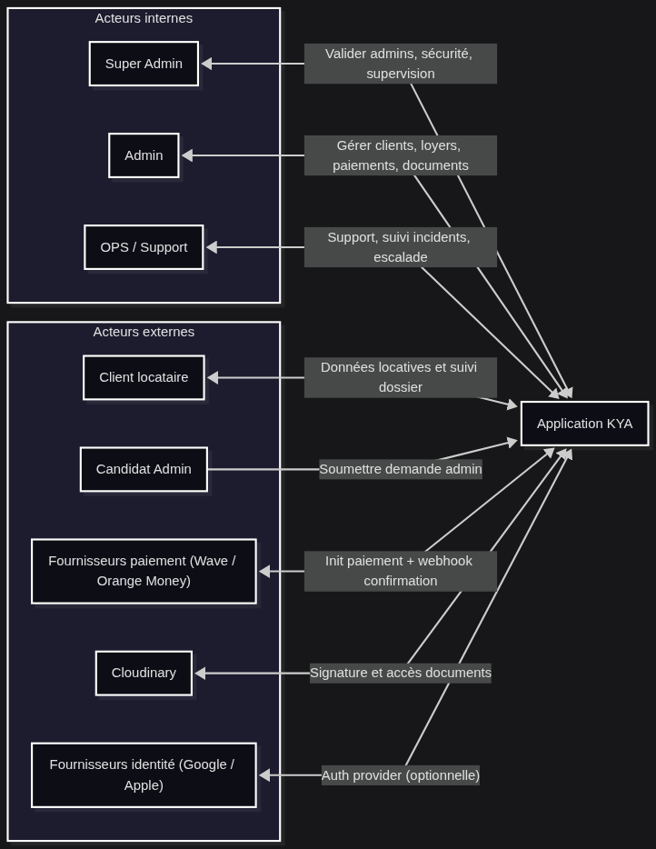
Figure 1. Contexte general du projet KYA
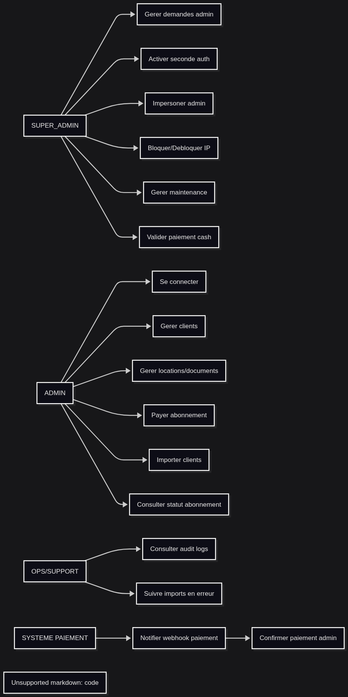
Figure 2. Vue globale existante du projet et de son ecosysteme
1.3 Problematique
La gestion manuelle des clients et locations entraine des erreurs de ressaisie.
Les paiements et depots sont difficiles a suivre sans historique centralise.
Les documents ne sont pas toujours relies proprement au client ou a la location concernes.
L import de donnees depuis Excel peut injecter des doublons si aucune validation n'est mise en place.
La supervision et la securite sont insuffisantes sans audit, maintenance, permissions et seconde authentification.
1.4 Objectif general
Fournir une solution complete et moderne de gestion locative multi-roles, capable de gerer les clients, les locations, les paiements, les depots et les documents, avec un controle multi-niveaux, une traçabilite forte et une interface responsive sur web et desktop.
1.5 Objectifs specifiques
Permettre au Super Admin de gerer les demandes admin, l activation des comptes, l impersonation et les politiques globales.
Permettre a chaque admin de gerer uniquement ses clients, ses locations, ses paiements et ses documents.
Automatiser l'import de donnees depuis Excel, CSV ou JSON avec mapping clair, validation, correction et journalisation.
Mettre en place un controle de securite comprenant JWT, cookies, CSRF, audit, blocage IP, seconde authentification et gouvernance de maintenance.
Permettre l'envoi de notifications transactionnelles claires et personnalisees vers les clients, les admins et les Super Admins.
Chapitre 2 - Analyse fonctionnelle et UML
2.1 Acteurs du systeme
Acteur
Responsabilites principales
Super Admin
Approuver les demandes admin, gouverner la plateforme, superviser l audit, activer la maintenance, valider certains paiements et impersoner un admin.
Admin
Gerer son portefeuille de clients, ses locations, ses paiements, ses depots, ses documents et ses imports.
Client
Recevoir des notifications et regulariser les paiements ou documents le concernant.
Services externes
Cloudinary pour les fichiers, Brevo pour les emails, providers de paiement pour les transactions et webhooks.
2.2 Stack technique et choix structurants
Composant
Choix
Frontend Web
React 18, Vite 7, TypeScript, Tailwind CSS, shadcn/ui
Figure 5. Activite d'approbation d'un administrateur
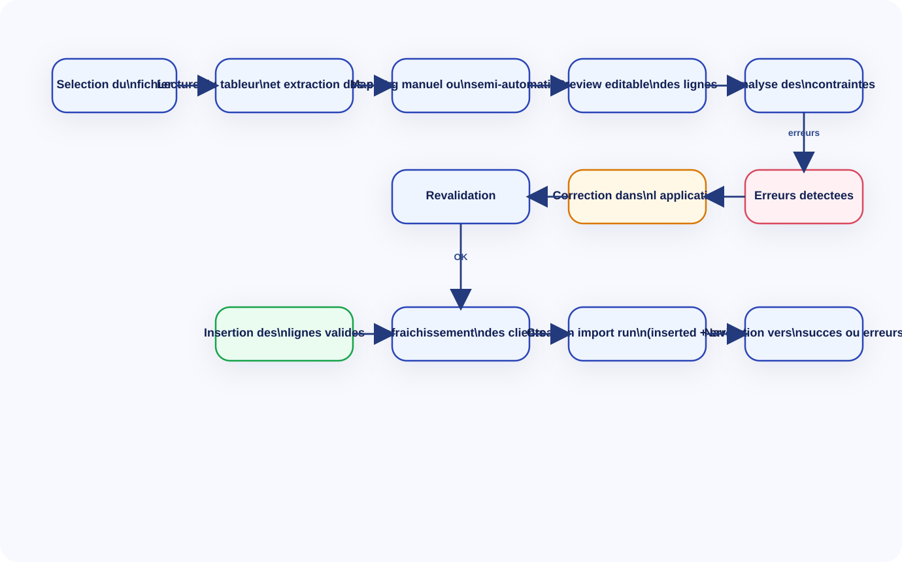
Figure 6. Activite d'import de clients
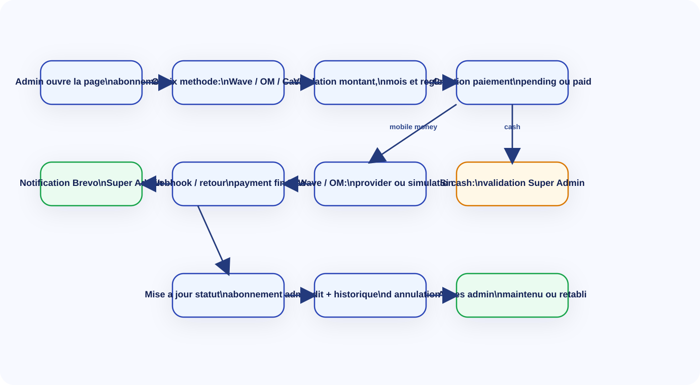
Figure 7. Activite de paiement abonnement administrateur
2.5 Diagrammes de sequence
Les diagrammes de sequence suivants decrivent les interactions exactes entre les acteurs, le frontend, les routes API, les services metier et la persistance pour les fonctionnalites critiques.
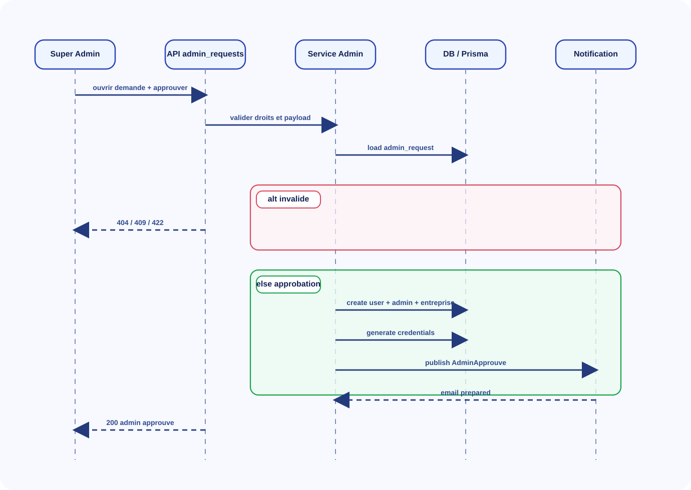
Figure 8. Sequence d'approbation administrateur
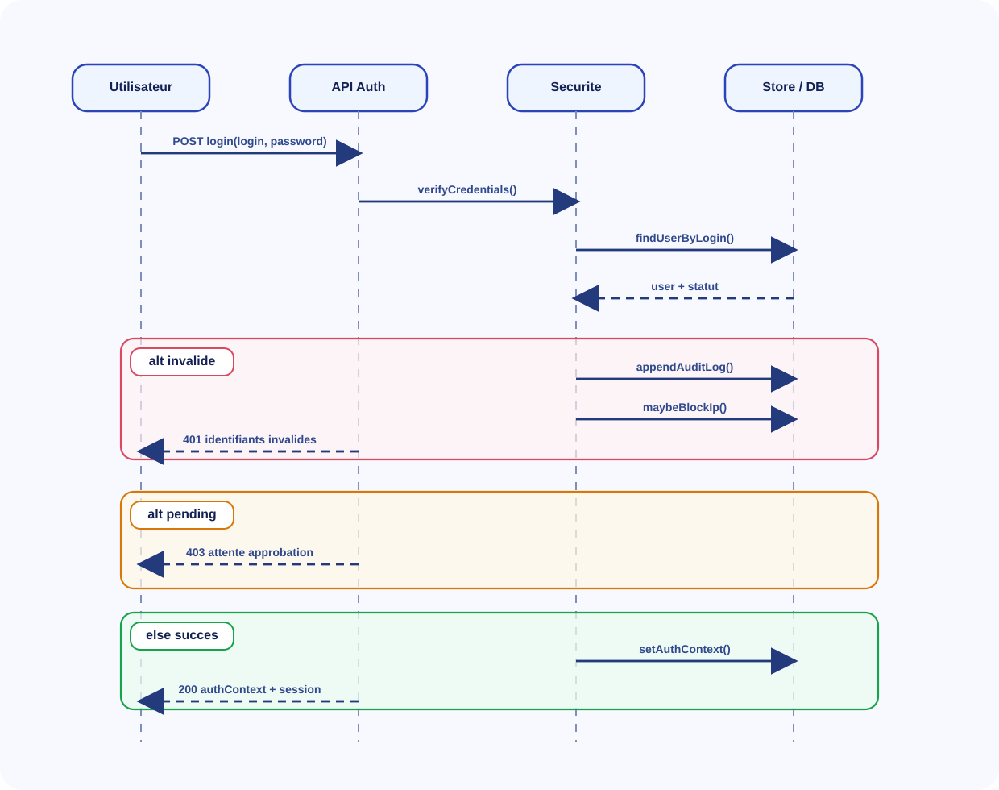
Figure 9. Sequence login et seconde authentification
Import de masse Excel / CSV / JSON avec mapping, validation, correction avant insertion et journal d'execution.
Paiement d'abonnement administrateur avec verification du mois requis, gestion cash / mobile money, historisation et notification.
Audit, maintenance, blocage IP, seconde authentification et configuration plateforme dynamique.
2.7 Exigences non fonctionnelles
Responsive design sur mobile, tablette et desktop.
Architecture maintenable et evolutive en couches frontend et backend.
Performance acceptable sur les lectures et ecritures frequentes.
Deploiement simple sur Vercel, Render ou environment Docker.
Traçabilite forte des operations critiques via audit logs et undo actions.
Chapitre 3 - Methodologie et organisation
3.1 Approche de travail
Le projet a ete mene selon une logique iterative proche de l Agile, avec un decoupage court en fonctionnalites livrables. Chaque increment visait a produire une valeur visible: authentification, clients, locations, paiements, imports, gouvernance ou notifications. Cette approche a permis de corriger tres vite les problemes UX, les regressions et les blocages metier observes durant les tests.
3.2 Phasage du projet
Periode
Phase
Livrable
Jour 1 a 3
Cadrage fonctionnel
Definition des roles, du perimetre, des objets metier et des flux critiques.
Jour 4 a 6
Conception UML et architecture
Formalisation des cas d utilisation, activites, architecture frontend et backend.
Jour 7 a 12
Implementation coeur produit
Auth, clients, locations, paiements, documents, routes et store global.
Jour 13 a 16
Import et supervision
Import Excel/CSV/JSON, gestion des erreurs, import runs, audit, undo.
Jour 17 a 19
Notifications et gouvernance
Brevo, relances, parametres Super Admin, maintenance, branding.
Jour 20 a 21
Tests et deploiement
Build, verifications, correction responsive et preparation soutenance.
3.3 Livrables attendus
Application frontend fonctionnelle et responsive.
Backend securise avec Prisma, routes, controleurs et services applicatifs.
Documentation technique et architecture UML.
Deploiement web avec configuration runtime de l API.
Dossier de soutenance complet et preuves d implementation.
L architecture globale de KYA repose sur une separation claire entre le frontend React/Vite, la couche de services frontend, le backend Next.js App Router, la logique applicative / domaine, la persistence PostgreSQL via Prisma et les integrations externes de notification et de media.
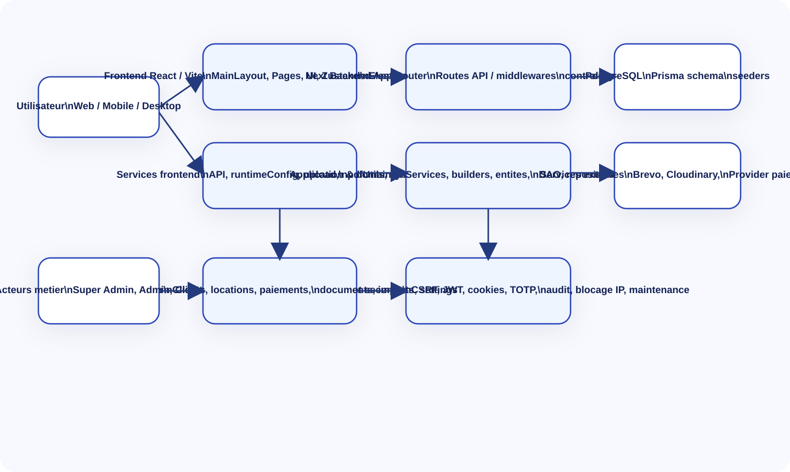
Figure 12. Architecture globale de la solution
4.2 Architecture frontend
Le frontend est structure en couches lisibles: routage principal, providers globaux, layout, pages, composants, services et infrastructure. Cette separation facilite les tests, la maintenance et la possibilite d executer le meme coeur produit dans un navigateur ou dans Electron.
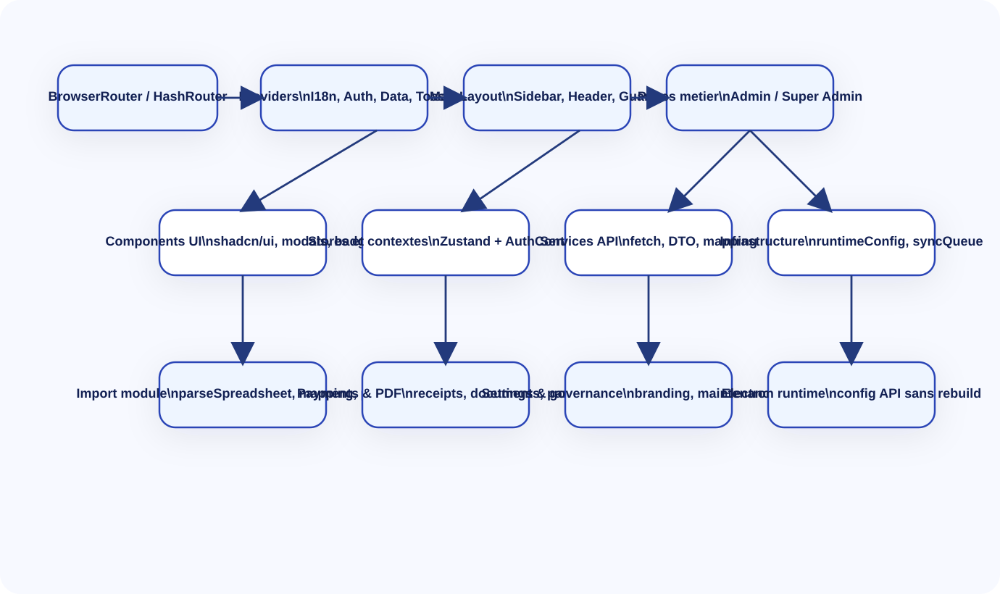
Figure 13. Architecture frontend
4.3 Architecture backend
Le backend suit une organisation POO / SOLID. Les routes App Router ne contiennent pas la logique metier; elles transmettent la requete vers un controleur. Les controleurs orchestrent les validateurs, DTO et services applicatifs. Les services s appuient ensuite sur des interfaces de persistence, implementees par des DAO et repositories Prisma ou memoire.
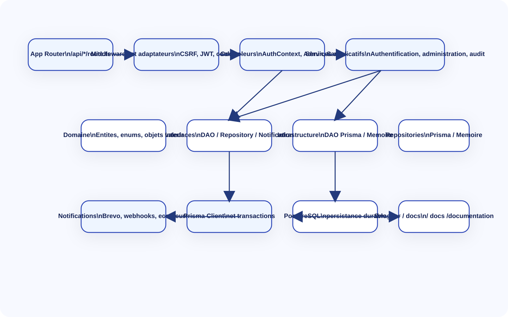
Figure 14. Architecture backend
4.4 Diagramme de deploiement
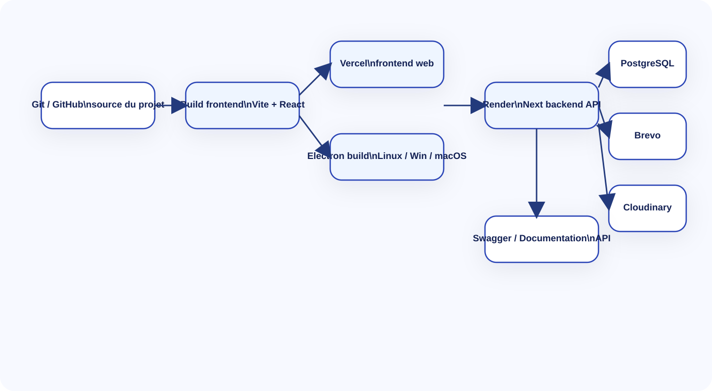
Figure 15. Architecture de deploiement
4.5 Cartographie des modules
Module
Description
Frontend
Backend
Authentification et session
Connexion admin / super admin, session persistante, seconde authentification, impersonation
Le modele relationnel retenu structure les comptes, les sessions, les permissions, les clients, les locations, les paiements, les depots, les documents, les imports, les notifications et l audit. Le schema Prisma garantit la centralisation et la durabilite des donnees metier cote backend.
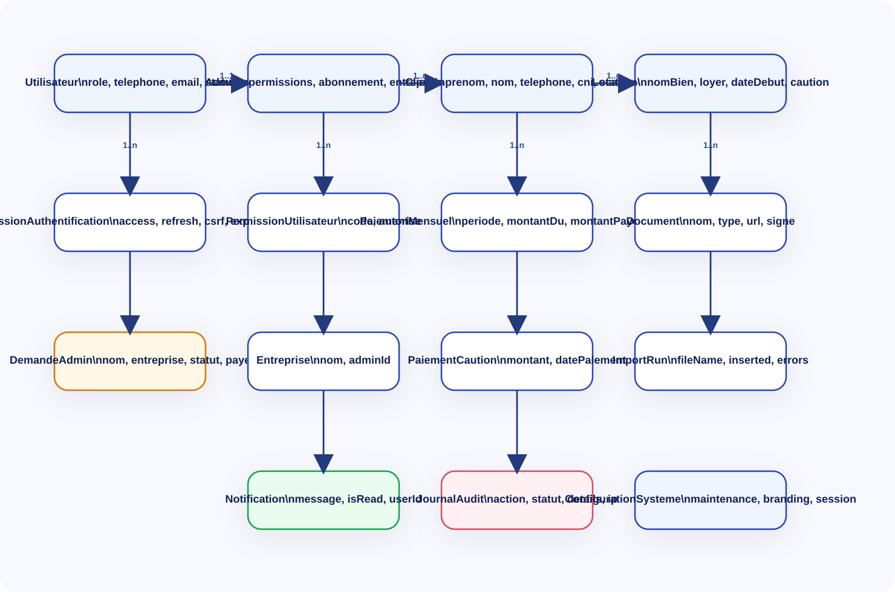
Figure 16. Modele de donnees principal
5.2 Entites coeur
Utilisateur: identite, role, telephone, email, statut, seconde authentification Super Admin.
Client: identite, contacts, CNI, statut et relation avec les locations.
Location: bien, loyer, date de debut, cautions, paiements mensuels, documents.
ImportRun: fichier source, nombre de lignes, lignes inserees, erreurs, pages lues/non lues.
Notification et JournalAudit: traçabilite des actions et diffusion des evenements.
5.3 Securite mise en place
Extraction du jeton d acces depuis les cookies ou le bearer token.
Protection CSRF sur les mutations.
Blocage automatique des IP en fonction du nombre d'echecs de connexion.
Seconde authentification Super Admin avec TOTP et TTL de verification.
Impersonation encadree pour permettre au Super Admin de se faire passer pour un admin sans casser l isolation metier.
Audit des operations sensibles et historique d annulation.
5.4 Configuration plateforme
Le Super Admin peut modifier a chaud les regles de maintenance, les durees de session, les politiques de paiement, les documents autorises, les canaux de notification, le branding et les exports d audit. Cette configuration est stockee dans la cle platform_config_v1 et rechargee cote frontend.
Chapitre 6 - Implementation detaillee des grandes fonctionnalites
6.1 Authentification, approbation et acces multi-roles
Le flux d authentification se base sur AuthContext cote frontend et sur un backend structure autour de l authContext, des services d authentification, du controle des permissions et des DAO Prisma. Apres approbation d une demande admin, le compte peut se connecter avec email ou telephone, y compris au format local ou prefixe +221.
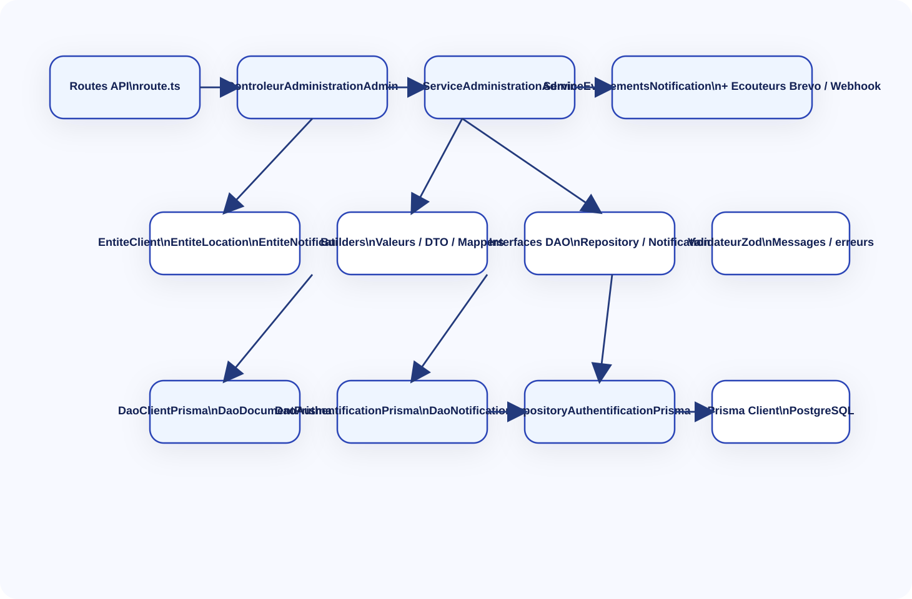
Figure 17. Diagramme de classes techniques
Le correctif de normalisation des telephones a ete important pour la stabilite de la connexion. Il evite qu un numero enregistre sous la forme +221771234567 soit considere comme invalide lorsque l utilisateur saisit 771234567.
6.2 Gestion clients, locations, paiements et documents
Le store Zustand centralise les actions metier du frontend. Les operations de creation client, ajout de location, versement mensuel, caution, upload de document et recalcul des statistiques y sont orchestrees. Le backend assure ensuite les verifications d ownership et la persistence relationnelle.
6.3 Import Excel / CSV / JSON
L import a constitue un axe majeur du projet. L administrateur peut charger un fichier Excel, CSV ou JSON, mapper les colonnes detectees, corriger les champs obligatoires, previsualiser les lignes, lancer l analyse puis importer uniquement les lignes valides. En cas d erreur, un import run est cree avec les erreurs ligne par ligne et une navigation vers la page dediee.
Lecture du fichier et extraction des en-tetes.
Mapping manuel ou semi-automatique des colonnes.
Validation des champs obligatoires et des formats.
Correction inline des donnees avant insertion.
Insertion des lignes valides avec timeout et progression.
Creation d'un journal d'import (import run) pour les succes et les erreurs.
6.4 Paiement abonnement administrateur
La page d abonnement admin permet de payer le mois requis par Wave, Orange Money ou cash. Le backend controle les doublons, l ordre des mois, les restrictions de methode et la finalisation du paiement. Lorsqu un paiement devient effectivement paid, un evenement est publie pour notifier le Super Admin.
6.5 Notifications transactionnelles Brevo
Le service Brevo implemente une interface de notification generique. Il prend en charge la construction de templates HTML riches selon l evenement: creation de demande admin, approbation admin, paiement abonnement admin, retard de paiement client, etc. Le service d evenements permet d ajouter plusieurs ecouteurs sans coupler la logique metier a un provider unique.
6.6 Gouvernance plateforme et supervision
Le module de gouvernance expose des parametres transverses: maintenance, session, documents, paiements, notifications, branding, audit et conformite. Il alimente le chargement runtime du frontend, conditionne le comportement de certains middlewares backend et facilite la supervision globale de la plateforme.
Chapitre 7 - Deploiement, tests et exploitation
7.1 Strategie de deploiement
Le frontend web est deploye sur Vercel. Le backend Next.js est deploye separement sur une plateforme de type Render, avec PostgreSQL comme base de donnees. Cette separation permet de conserver un backend persistant et de laisser le frontend Vite beneficier des avantages de Vercel pour le build et la distribution SPA.
Cle API Brevo pour les notifications transactionnelles
BREVO_SENDER_EMAIL
Expediteur email transactionnel
BREVO_NOTIFICATION_SUPER_ADMIN_EMAILS
Liste des destinataires Super Admin
ALERTE_SUPER_ADMIN_WEBHOOK_URL
Webhook alerte supervision
7.3 Tests et qualite
Verification frontend par build Vite.
Lint et typecheck sur le backend Next.
Tests d endpoints disponibles cote backend pour les modules admin et Super Admin.
Controle de responsive et de non debordement sur mobile.
Verification des flux critiques: login, import, abonnement, notifications, erreurs et succes.
7.4 Exploitation
La version desktop Electron permet de conserver une experience hors navigateur, tout en gardant la possibilite de changer l URL de l API via un fichier runtime sans recompiler l application. Cette capacite est importante pour l installation sur plusieurs environnements.
Chapitre 8 - Discussion, limites et perspectives
8.1 Resultats obtenus
Une plateforme web et desktop coherente pour la gestion locative multi-roles.
Une separation claire entre gouvernance Super Admin et exploitation Admin.
Un import de donnees plus simple a manipuler, corrigeable avant insertion et traçable.
Une base de donnees relationnelle et un backend industrialisable en couches.
Des notifications transactionnelles structurees et prêtes pour l exploitation reelle.
8.2 Limites actuelles
Certaines integrations externes dependent des validations de compte chez les fournisseurs (par exemple Brevo transactionnel).
Le mode mobile web est deja exploitable, mais certains modules secondaires peuvent encore etre harmonises pour obtenir une experience parfaitement uniforme.
Une automatisation e2e plus poussee permettrait de produire encore plus de preuves d execution sur les parcours critiques.
8.3 Perspectives
Ajouter des tableaux de bord analytiques plus pousses pour les loyers, la rentabilite et les arrieres.
Etendre les notifications vers WhatsApp et SMS selon les regles de gouvernance.
Ajouter une gestion avancee des contrats, signatures et workflows documentaires.
Mettre en place une pipeline CI/CD complete avec matrix build Electron multi-OS.
Renforcer encore les tests e2e pour les parcours complets de gestion locative.
Conclusion generale
Le projet KYA montre qu une solution de gestion locative peut etre concue de maniere a la fois pratique pour les utilisateurs et rigoureuse du point de vue de l architecture. La plateforme ne se limite pas a un CRUD: elle integre une vraie gouvernance, des imports traces, des notifications, une securite renforcee, une compatibilite web / desktop et une base technique solide pour evoluer.
Du point de vue de la soutenance, la valeur du projet reside autant dans les fonctionnalites visibles que dans la structure interne du code: separation des responsabilites, centralisation des politiques, normalisation de l acces API, architecture backend en couches, schema Prisma, et prise en compte des contraintes de deploiement reelles.
En conclusion, KYA constitue une base serieuse de plateforme SaaS de gestion locative, exploitable, demonstrable et evolutive. Le present dossier apporte les pieces necessaires pour justifier les choix fonctionnels, techniques et architecturaux du projet.
Cet extrait prouve la separation des routes communes, administrateur et Super Admin. Il montre aussi l usage de MainLayout, des providers globaux, du badge offline et des pages metier.
Le store Zustand centralise les clients, les statistiques et les actions metier comme la creation client, les paiements, les documents et les synchronisations offline.
Ce bloc montre l analyse, le calcul des erreurs, le parcours des lignes valides, l enregistrement des import runs et la navigation vers les pages succes / erreurs.
Le backend est organise autour d un conteneur qui instancie la configuration, la securite, Prisma, les services applicatifs, les DAO, les ecouteurs de notifications et les controleurs.
1 | import { ServiceSante } from '@/src/application/services/sante/ServiceSante'
2 | import { ControleurSante } from '@/src/controleurs/ControleurSante'
3 | import { AdaptateurPrisma } from '@/src/infrastructure/base_de_donnees/AdaptateurPrisma'
4 | import { ClientPrisma } from '@/src/infrastructure/base_de_donnees/ClientPrisma'
5 | import { ValidateurZod } from '@/src/infrastructure/validateurs/ValidateurZod'
6 | import { ConfigurationApplication } from '@/src/coeur/configuration/ConfigurationApplication'
7 | import { ConfigurationSecurite } from '@/src/coeur/configuration/ConfigurationSecurite'
8 | import { ServiceHachageMotDePasseArgon2 } from '@/src/infrastructure/securite/ServiceHachageMotDePasseArgon2'
9 | import { ServiceJetonAccesJwt } from '@/src/infrastructure/securite/ServiceJetonAccesJwt'
10 | import { ServiceTotp } from '@/src/infrastructure/securite/ServiceTotp'
11 | import { ServiceChiffrementSymetrique } from '@/src/infrastructure/securite/ServiceChiffrementSymetrique'
12 | import { ServiceAuditSecurite } from '@/src/infrastructure/securite/ServiceAuditSecurite'
13 | import { ServiceAuditSecuriteMemoire } from '@/src/infrastructure/securite/ServiceAuditSecuriteMemoire'
14 | import { ServiceAlerteSuperAdminWebhook } from '@/src/infrastructure/alertes/ServiceAlerteSuperAdminWebhook'
15 | import { ServiceEmailBrevo } from '@/src/infrastructure/alertes/ServiceEmailBrevo'
16 | import { ServiceEvenementsNotification } from '@/src/infrastructure/alertes/ServiceEvenementsNotification'
17 | import { ServiceEcouteurEvenementsNotificationBrevo } from '@/src/infrastructure/alertes/ServiceEcouteurEvenementsNotificationBrevo'
18 | import { ServiceEcouteurEvenementsNotificationWebhook } from '@/src/infrastructure/alertes/ServiceEcouteurEvenementsNotificationWebhook'
19 | import { ServiceAuthentification } from '@/src/application/services/authentification/ServiceAuthentification'
20 | import { ServiceContexteAuthentification } from '@/src/application/services/authentification/ServiceContexteAuthentification'
21 | import { ServiceSessionAuthentification } from '@/src/application/services/authentification/ServiceSessionAuthentification'
22 | import { ServiceSecuriteSessionAuthentification } from '@/src/application/services/authentification/ServiceSecuriteSessionAuthentification'
23 | import { ServiceTotpSuperAdminAuthentification } from '@/src/application/services/authentification/ServiceTotpSuperAdminAuthentification'
24 | import { ServiceAutorisationAuthentification } from '@/src/application/services/authentification/ServiceAutorisationAuthentification'
25 | import { ServiceAuditAuthentification } from '@/src/application/services/authentification/ServiceAuditAuthentification'
26 | import { ServiceImpersonationAuthentification } from '@/src/application/services/authentification/ServiceImpersonationAuthentification'
27 | import { ValidateurAuthentification } from '@/src/application/validateurs/ValidateurAuthentification'
28 | import { ControleurAuthContext } from '@/src/controleurs/ControleurAuthContext'
29 | import { ServiceCookiesAuthentification } from '@/src/infrastructure/securite/ServiceCookiesAuthentification'
30 | import { ServiceProtectionCsrf } from '@/src/infrastructure/securite/ServiceProtectionCsrf'
31 | import { AdaptateurRequeteSecurite } from '@/src/infrastructure/securite/AdaptateurRequeteSecurite'
32 | import { ServiceEntetesSecuriteHttp } from '@/src/infrastructure/securite/ServiceEntetesSecuriteHttp'
33 | import { ServiceCorsStrict } from '@/src/infrastructure/securite/ServiceCorsStrict'
34 | import { UtilitairesSecurite } from '@/src/infrastructure/securite/UtilitairesSecurite'
35 | import { ReponseHttp } from '@/src/infrastructure/http/ReponseHttp'
36 | import { ContexteRequeteHttp } from '@/src/infrastructure/http/ContexteRequeteHttp'
37 | import { ValidateurAuthentificationZod } from '@/src/infrastructure/validateurs/ValidateurAuthentificationZod'
38 | import {
39 | MappeurUtilisateurAuthentification,
40 | } from '@/src/application/mappers'
41 | import { DaoAuthentificationPrisma } from '@/src/infrastructure/dao/prisma/authentification/DaoAuthentificationPrisma'
42 | import { DaoAuthentificationMemoire } from '@/src/infrastructure/dao/memoire/authentification/DaoAuthentificationMemoire'
43 | import { InterfaceDaoAuthentification } from '@/src/domaine/interfaces/dao/authentification/InterfaceDaoAuthentification'
44 | import { InterfaceRepositoryAuthentification } from '@/src/domaine/interfaces/repository/InterfaceRepositoryAuthentification'
45 | import { InterfaceServiceHachageMotDePasse } from '@/src/coeur/interfaces/InterfaceServiceHachageMotDePasse'
46 | import { InterfaceServiceJetonAcces } from '@/src/coeur/interfaces/InterfaceServiceJetonAcces'
47 | import { InterfaceServiceTotp } from '@/src/coeur/interfaces/InterfaceServiceTotp'
48 | import { InterfaceServiceChiffrement } from '@/src/coeur/interfaces/InterfaceServiceChiffrement'
49 | import { InterfaceServiceAuditSecurite } from '@/src/coeur/interfaces/InterfaceServiceAuditSecurite'
50 | import {
51 | TypeDestinataireNotification,
52 | TypeRoleDestinataireNotification,
53 | } from '@/src/coeur/interfaces/InterfaceNotification'
54 | import { InterfaceUtilitairesSecurite } from '@/src/coeur/interfaces/InterfaceUtilitairesSecurite'
55 | import { RepositoryAuthentificationPrisma } from '@/src/infrastructure/repositories/prisma/RepositoryAuthentificationPrisma'
56 | import { RepositoryAuthentificationMemoire } from '@/src/infrastructure/repositories/memoire/RepositoryAuthentificationMemoire'
57 | import { FabriqueSessionAuthentification } from '@/src/application/fabriques/FabriqueSessionAuthentification'
58 | import { FabriqueJetonRefresh } from '@/src/application/fabriques/FabriqueJetonRefresh'
59 | import { ServiceAdministrationAdmin } from '@/src/application/services/administration/ServiceAdministrationAdmin'
60 | import { ControleurAdministrationAdmin } from '@/src/controleurs/ControleurAdministrationAdmin'
61 | import {
62 | DaoPaiementAbonnementAdminMemoire,
63 | DaoStatutAbonnementAdminMemoire,
64 | } from '@/src/infrastructure/dao/memoire/administration'
65 | import {
66 | DaoPaiementAbonnementAdminPrisma,
67 | DaoStatutAbonnementAdminPrisma,
68 | } from '@/src/infrastructure/dao/prisma/administration'
69 | import {
70 | DaoClientMemoire,
71 | DaoDocumentMemoire,
72 | DaoPaiementCautionMemoire,
73 | DaoTransactionPaiementMemoire,
74 | } from '@/src/infrastructure/dao/memoire/locations'
75 | import {
76 | DaoClientPrisma,
77 | DaoDocumentPrisma,
78 | DaoPaiementCautionPrisma,
79 | DaoTransactionPaiementPrisma,
80 | } from '@/src/infrastructure/dao/prisma/locations'
81 | import {
82 | DaoExecutionImportMemoire,
83 | DaoIpBloqueeMemoire,
84 | DaoItemTravailMemoire,
85 | DaoJournalAuditMemoire,
86 | DaoNotificationMemoire,
87 | } from '@/src/infrastructure/dao/memoire/systeme'
88 | import {
89 | DaoExecutionImportPrisma,
90 | DaoIpBloqueePrisma,
91 | DaoItemTravailPrisma,
92 | DaoJournalAuditPrisma,
93 | DaoNotificationPrisma,
94 | DaoParametreAdminPrisma,
95 | } from '@/src/infrastructure/dao/prisma/systeme'
96 | import { creerServiceAdministrationAdminSupervision } from '@/src/coeur/conteneur/FabriqueServiceAdministrationAdminSupervision'
97 | import { lirePolitiquePlateforme } from '@/src/infrastructure/http/politiquePlateforme'
98 |
99 | class ConteneurDependances {
100 | public configurationApplication = new ConfigurationApplication()
101 | public configurationSecurite = new ConfigurationSecurite()
102 | public utiliseMemoire =
103 | this.configurationApplication.driverPersistanceAuthentification() === 'memoire'
104 | public prisma = ClientPrisma.obtenirInstance()
105 | public clientBaseDeDonnees = new AdaptateurPrisma()
106 | public validateurEntree = new ValidateurZod()
107 | public validateurAuthentificationInfrastructure = new ValidateurAuthentificationZod()
108 | public validateurAuthentification = new ValidateurAuthentification(
109 | this.validateurAuthentificationInfrastructure
110 | )
111 | public utilitairesSecurite: InterfaceUtilitairesSecurite = new UtilitairesSecurite()
112 | public reponseHttp = new ReponseHttp()
113 | public contexteRequeteHttp = new ContexteRequeteHttp(this.utilitairesSecurite)
114 | public mappeurUtilisateurAuthentification = new MappeurUtilisateurAuthentification(
115 | this.configurationSecurite
116 | )
117 | public serviceHachageMotDePasse: InterfaceServiceHachageMotDePasse = new ServiceHachageMotDePasseArgon2()
118 | public serviceJetonAcces: InterfaceServiceJetonAcces = new ServiceJetonAccesJwt(
119 | this.configurationSecurite.cleJwt(),
120 | this.configurationSecurite.dureeJetonAccesSecondes()
121 | )
122 | public serviceTotp: InterfaceServiceTotp = new ServiceTotp()
123 | public serviceChiffrement: InterfaceServiceChiffrement = new ServiceChiffrementSymetrique(
124 | this.configurationSecurite.cleChiffrementTotp()
125 | )
126 | public daoAuthentificationPrisma: InterfaceDaoAuthentification = new DaoAuthentificationPrisma(this.prisma)
127 | public daoAuthentificationMemoire = new DaoAuthentificationMemoire()
128 | public serviceAlerteSuperAdminWebhook = new ServiceAlerteSuperAdminWebhook(
129 | this.configurationSecurite.urlWebhookAlertesSuperAdmin()
130 | )
131 | public serviceNotificationBrevo = new ServiceEmailBrevo({
132 | cleApi: this.configurationSecurite.brevoCleApi(),
133 | expediteurEmail: this.configurationSecurite.brevoExpediteurEmail(),
134 | expediteurNom: this.configurationSecurite.brevoExpediteurNom(),
135 | })
136 | public serviceEvenementsNotification = new ServiceEvenementsNotification()
137 | public serviceEcouteurEvenementsNotificationBrevo =
138 | new ServiceEcouteurEvenementsNotificationBrevo({
139 | serviceNotification: this.serviceNotificationBrevo,
140 | destinatairesParRole: this.construireDestinatairesNotificationParRole(),
141 | })
142 | public serviceEcouteurEvenementsNotificationWebhook =
143 | new ServiceEcouteurEvenementsNotificationWebhook(this.serviceAlerteSuperAdminWebhook)
144 | public serviceAuditSecuritePrisma: InterfaceServiceAuditSecurite = new ServiceAuditSecurite(
145 | this.prisma,
146 | this.configurationSecurite.urlWebhookAlertes(),
147 | {
148 | apiToken: this.configurationSecurite.whatsappCloudApiToken(),
149 | phoneNumberId: this.configurationSecurite.whatsappCloudPhoneNumberId(),
150 | destination: this.configurationSecurite.whatsappCloudDestination(),
151 | apiVersion: this.configurationSecurite.whatsappCloudApiVersion(),
152 | },
153 | this.serviceAlerteSuperAdminWebhook
154 | )
155 | public serviceAuditSecuriteMemoire: InterfaceServiceAuditSecurite =
156 | new ServiceAuditSecuriteMemoire(this.daoAuthentificationMemoire)
157 | public serviceAuditSecurite: InterfaceServiceAuditSecurite =
158 | this.utiliseMemoire ? this.serviceAuditSecuriteMemoire : this.serviceAuditSecuritePrisma
159 | public serviceCookiesAuthentification = new ServiceCookiesAuthentification({
160 | modeSecurise: this.configurationSecurite.modeCookieSecurise(),
161 | sameSite: this.configurationSecurite.modeSameSiteCookies(),
162 | })
163 | public serviceProtectionCsrf = new ServiceProtectionCsrf()
164 | public adaptateurRequeteSecurite = new AdaptateurRequeteSecurite(this.serviceProtectionCsrf)
165 | public serviceEntetesSecuriteHttp = new ServiceEntetesSecuriteHttp()
166 | public serviceCorsStrict = new ServiceCorsStrict(this.configurationSecurite.originesCorsAutorisees())
167 | public repositoryAuthentificationPrisma: InterfaceRepositoryAuthentification =
168 | new RepositoryAuthentificationPrisma(this.daoAuthentificationPrisma)
169 | public repositoryAuthentificationMemoire: InterfaceRepositoryAuthentification =
170 | new RepositoryAuthentificationMemoire(this.daoAuthentificationMemoire)
171 | public repositoryAuthentification: InterfaceRepositoryAuthentification =
172 | this.utiliseMemoire ? this.repositoryAuthentificationMemoire : this.repositoryAuthentificationPrisma
173 | public fabriqueSessionAuthentification = new FabriqueSessionAuthentification()
174 | public fabriqueJetonRefresh = new FabriqueJetonRefresh()
175 | public serviceContexteAuthentification = new ServiceContexteAuthentification(
176 | this.repositoryAuthentification,
177 | this.serviceJetonAcces,
178 | this.mappeurUtilisateurAuthentification
179 | )
180 | public serviceSecuriteSessionAuthentification = new ServiceSecuriteSessionAuthentification(
181 | this.repositoryAuthentification,
182 | this.configurationSecurite,
183 | this.serviceAuditSecurite,
184 | async () => {
185 | const politique = await lirePolitiquePlateforme(this.prisma)
186 | return {
187 | maxFailedLogins: politique.sessionSecurity.maxFailedLogins,
188 | lockoutMinutes: politique.sessionSecurity.lockoutMinutes,
189 | }
190 | }
191 | )
192 | public serviceSessionAuthentification = new ServiceSessionAuthentification(
193 | this.repositoryAuthentification,
194 | this.serviceHachageMotDePasse,
195 | this.serviceJetonAcces,
196 | this.serviceAuditSecurite,
197 | this.configurationSecurite,
198 | this.utilitairesSecurite,
199 | this.fabriqueSessionAuthentification,
200 | this.fabriqueJetonRefresh,
201 | this.mappeurUtilisateurAuthentification,
202 | this.serviceSecuriteSessionAuthentification,
203 | async () => {
204 | const politique = await lirePolitiquePlateforme(this.prisma)
205 | return {
206 | sessionDurationMinutes: politique.sessionSecurity.sessionDurationMinutes,
207 | inactivityTimeoutMinutes: politique.sessionSecurity.inactivityTimeoutMinutes,
208 | }
209 | }
210 | )
211 | public serviceTotpSuperAdminAuthentification = new ServiceTotpSuperAdminAuthentification(
212 | this.serviceContexteAuthentification,
213 | this.serviceSecuriteSessionAuthentification,
214 | this.repositoryAuthentification,
215 | this.serviceTotp,
216 | this.serviceChiffrement,
217 | this.serviceAuditSecurite,
218 | this.serviceHachageMotDePasse,
219 | this.configurationApplication
220 | )
221 | public serviceAutorisationAuthentification = new ServiceAutorisationAuthentification(this.serviceContexteAuthentification)
222 | public serviceAuditAuthentification = new ServiceAuditAuthentification(this.repositoryAuthentification, this.serviceAutorisationAuthentification)
223 | public serviceImpersonationAuthentification = new ServiceImpersonationAuthentification(this.serviceContexteAuthentification, this.repositoryAuthentification)
224 | public serviceAuthentification = new ServiceAuthentification(
225 | this.serviceSessionAuthentification,
226 | this.serviceContexteAuthentification,
227 | this.serviceTotpSuperAdminAuthentification,
228 | this.serviceAutorisationAuthentification,
229 | this.serviceAuditAuthentification,
230 | this.serviceImpersonationAuthentification
231 | )
232 | public controleurAuthContext = new ControleurAuthContext(this.serviceAuthentification, this.validateurAuthentification)
233 | public daoClientMemoire = new DaoClientMemoire()
234 | public daoClientPrisma = new DaoClientPrisma(this.prisma)
235 | public daoClient = this.utiliseMemoire ? this.daoClientMemoire : this.daoClientPrisma
236 | public daoDocumentMemoire = new DaoDocumentMemoire()
237 | public daoDocumentPrisma = new DaoDocumentPrisma(this.prisma)
238 | public daoDocument = this.utiliseMemoire ? this.daoDocumentMemoire : this.daoDocumentPrisma
239 | public daoTransactionPaiementMemoire = new DaoTransactionPaiementMemoire()
240 | public daoTransactionPaiementPrisma = new DaoTransactionPaiementPrisma(this.prisma)
241 | public daoTransactionPaiement =
242 | this.utiliseMemoire ? this.daoTransactionPaiementMemoire : this.daoTransactionPaiementPrisma
243 | public daoPaiementCautionMemoire = new DaoPaiementCautionMemoire()
244 | public daoPaiementCautionPrisma = new DaoPaiementCautionPrisma(this.prisma)
245 | public daoPaiementCaution =
246 | this.utiliseMemoire ? this.daoPaiementCautionMemoire : this.daoPaiementCautionPrisma
247 | public daoItemTravailMemoire = new DaoItemTravailMemoire()
248 | public daoItemTravailPrisma = new DaoItemTravailPrisma(this.prisma)
249 | public daoItemTravail = this.utiliseMemoire ? this.daoItemTravailMemoire : this.daoItemTravailPrisma
250 | public daoExecutionImportMemoire = new DaoExecutionImportMemoire()
251 | public daoExecutionImportPrisma = new DaoExecutionImportPrisma(this.prisma)
252 | public daoExecutionImport =
253 | this.utiliseMemoire ? this.daoExecutionImportMemoire : this.daoExecutionImportPrisma
254 | public daoNotificationMemoire = new DaoNotificationMemoire()
255 | public daoNotificationPrisma = new DaoNotificationPrisma(this.prisma)
256 | public daoNotification = this.utiliseMemoire ? this.daoNotificationMemoire : this.daoNotificationPrisma
257 | public daoIpBloqueeMemoire = new DaoIpBloqueeMemoire()
258 | public daoIpBloqueePrisma = new DaoIpBloqueePrisma(this.prisma)
259 | public daoIpBloquee = this.utiliseMemoire ? this.daoIpBloqueeMemoire : this.daoIpBloqueePrisma
260 | public daoJournalAuditMemoire = new DaoJournalAuditMemoire()
BE-02 - Authentification Prisma avec normalisation telephone / email
La recherche d utilisateur accepte maintenant le telephone avec ou sans prefixe +221, ce qui stabilise l experience de connexion apres approbation d un admin.
Le service Brevo implemente une interface de notification, formate des templates HTML riches et envoie les emails transactionnels a chaque role concerne.
La route de relance construit la liste des paiements en retard, calcule les montants restants, charge le contexte admin et envoie les notifications client / admin.
Le schema Prisma structure les comptes, les sessions, les permissions, les clients, les locations, les paiements, les imports, les notifications et l audit.
# Aspect Fonctionnel - Analyse - Diagramme de Cas d Utilisation
## Diagramme global
```mermaid
flowchart LR
SA["SUPER_ADMIN"] --> UC1["Gerer demandes admin"]
SA --> UC2["Activer seconde authentification"]
SA --> UC3["Impersoner un admin"]
SA --> UC4["Bloquer/Debloquer IP"]
SA --> UC5["Activer/Desactiver maintenance"]
SA --> UC6["Valider paiement cash abonnement"]
SA --> UC7["Consulter audit et supervision"]
AD["ADMIN"] --> UC8["Se connecter"]
AD --> UC9["Gerer clients"]
AD --> UC10["Gerer locations et documents"]
AD --> UC11["Payer abonnement"]
AD --> UC12["Consulter statut abonnement"]
AD --> UC13["Importer clients"]
AD --> UC14["Executer rollback autorise"]
OPS["OPS/SUPPORT"] --> UC15["Analyser incidents"]
OPS --> UC16["Suivre imports en erreur"]
OPS --> UC17["Consulter audit logs"]
PSP["SYSTEME PAIEMENT"] --> UC18["Envoyer webhook signe"]
UC18 --> UC19["Confirmer paiement admin"]
```
## Use cases par acteur
### SUPER_ADMIN
```mermaid
flowchart LR
SA["SUPER_ADMIN"] --> S1["Se connecter"]
SA --> S2["Second auth"]
SA --> S3["Impersonation"]
SA --> S4["Valider/Rejeter admin_request"]
SA --> S5["Bloquer IP"]
SA --> S6["Debloquer IP"]
SA --> S7["Valider paiement cash"]
SA --> S8["Maintenance policy"]
```
### ADMIN
```mermaid
flowchart LR
AD["ADMIN"] --> A1["Login"]
AD --> A2["CRUD clients"]
AD --> A3["CRUD rentals"]
AD --> A4["Gerer documents"]
AD --> A5["Payer abonnement mobile money"]
AD --> A6["Importer clients"]
AD --> A7["Undo personnels"]
```
### OPS/SUPPORT
```mermaid
flowchart LR
OPS["OPS/SUPPORT"] --> O1["Audit consultation"]
OPS --> O2["Triage incidents login"]
OPS --> O3["Suivi import_runs/import_errors"]
```
### SYSTEME PAIEMENT
```mermaid
flowchart LR
PSP["SYSTEME PAIEMENT"] --> P1["Webhook signe"]
P1 --> P2["Verification signature"]
P2 --> P3["Passage admin_payment en paid"]
```
Activite abonnement
# Aspect Fonctionnel - Analyse - Diagramme d Activite
## Activite transversale: abonnement admin
```mermaid
flowchart LR
A["Debut"] --> B["Admin authentifie"]
B --> C["Saisir paiement abonnement"]
C --> D{"Methode valide ?"}
D -->|Non| X1["Erreur validation"]
D -->|Oui| E{"Mois requis respecte ?"}
E -->|Non| X2["Blocage mois prioritaire"]
E -->|Oui| F{"Doublon actif (admin,mois) ?"}
F -->|Oui| X3["Rejet doublon"]
F -->|Non| G{"cash ?"}
G -->|Oui| H["Validation Super Admin"]
G -->|Non| I["Initiation provider"]
I --> J{"Webhook paid ?"}
J -->|Oui| K["Statut paid + audit"]
J -->|Non| L["Statut pending"]
H --> K
K --> M["Fin succes"]
L --> M
```
Architecture globale
# Aspect Architectural - Diagramme d Architecture Globale
```mermaid
flowchart LR
FE["Frontend React/Electron"] --> API["KYA API"]
API --> SVC["Services Metier"]
SVC --> REPO["Repositories"]
REPO --> DB[(PostgreSQL)]
API --> SEC["Middlewares\nAuth/RBAC/Ownership/Maintenance"]
API --> EXT1["Provider Paiement"]
API --> EXT2["Cloudinary"]
API --> OBS["Logs/Audit/Metrics"]
CI["Jenkins CI/CD"] --> API
```
Composants backend
# Aspect Architectural - Diagramme de Composants
```mermaid
flowchart LR
subgraph API["API Layer"]
R["Routes"] --> C["Controllers"]
C --> V["Validation"]
C --> D["DTO Mapper"]
C --> S["Services"]
S --> I["Repository Interfaces"]
I --> P["PostgreSQL Repositories"]
C --> M["Message Catalog"]
end
subgraph SEC["Security"]
MW1["Auth Middleware"]
MW2["Ownership Middleware"]
MW3["Maintenance Middleware"]
MW4["RateLimit/IP Block Middleware"]
end
C --> MW1
C --> MW2
C --> MW3
C --> MW4
P --> DB[(PostgreSQL)]
S --> PSP["Payment Adapter"]
S --> CLD["Cloudinary Adapter"]
```
Diagrammes de sequence
# Diagrammes de Sequence
## Login + second auth
```mermaid
sequenceDiagram
participant User as User
participant API as /authContext/login
participant Sec as Security Logic
participant Data as Store/DB
User->>API: POST login(username,password)
API->>Sec: verifyCredentials()
Sec->>Data: findUserByLogin()
alt invalid credentials
Sec->>Data: appendAuditLog(FAILED_LOGIN)
Sec->>Data: maybeBlockIp()
API-->>User: 401 {error}
else valid admin but pending/inactive
API-->>User: 403 pending approval
else valid
Sec->>Data: setAuthContext(userId)
API-->>User: 200 authContext + subscription flags
end
User->>API: POST /authContext/super-admin/second-auth
API->>Sec: verifySuperAdminPassword()
alt wrong password
Sec->>Data: appendAuditLog(SUPER_ADMIN_SECOND_AUTH_FAILED)
API-->>User: 401
else success
Sec->>Data: set superAdminSecondAuthAt(now)
Sec->>Data: appendAuditLog(SUPER_ADMIN_SECOND_AUTH_SUCCESS)
API-->>User: 200 {ok:true}
end
```
## Creation paiement admin + webhook
```mermaid
sequenceDiagram
participant Admin as Admin
participant API as /admin_payments
participant Svc as Payment Service
participant PSP as Provider
participant DB as Store/DB
Admin->>API: POST payment(amount,method,month)
API->>Svc: validate role/method/amount/month
Svc->>Svc: compute requiredMonth
Svc->>DB: check duplicate active(admin,month)
alt duplicate or wrong month order
API-->>Admin: 409
else mobile method
Svc->>PSP: initiate payment
PSP-->>Svc: pending/paid + reference
Svc->>DB: insert admin_payment
API-->>Admin: 201 {status pending|paid}
else cash by super admin
Svc->>DB: insert admin_payment(status=paid)
API-->>Admin: 201
end
PSP->>API: POST /admin_payments/webhook/:provider
API->>Svc: verify signature
alt invalid signature
API-->>PSP: 401
else paid event
Svc->>DB: locate payment
Svc->>DB: mark paid + update admin paid flag
API-->>PSP: 200 {ok:true}
end
```
## Import clients + erreurs
```mermaid
sequenceDiagram
participant Admin as Admin
participant API as /import_runs
participant Svc as Import Service
participant DB as Store/DB
Admin->>API: POST import run(file metadata + parsed data)
API->>Svc: resolve owner adminId
Svc->>DB: create import_run
loop each row
Svc->>Svc: validate row
alt invalid or duplicate
Svc->>DB: append import_error
else valid
Svc->>DB: create/update client
end
end
Svc->>DB: update run counters/status
API-->>Admin: 201 import summary
```
## Undo rollback
```mermaid
sequenceDiagram
participant U as User
participant API as /undo-actions/:id/rollback
participant Undo as Undo Service
participant DB as Store/DB
U->>API: POST rollback(id)
API->>Undo: verify auth + ownership
Undo->>DB: load undo entry
alt not found/forbidden/expired
API-->>U: 404|403|410
else valid
Undo->>Undo: resolve rollback plan
Undo->>DB: apply rollback + side effects
Undo->>DB: remove undo entry
Undo->>DB: append audit log
API-->>U: 200 {ok:true}
end
```